+ / - geeft zoom • reset = 0
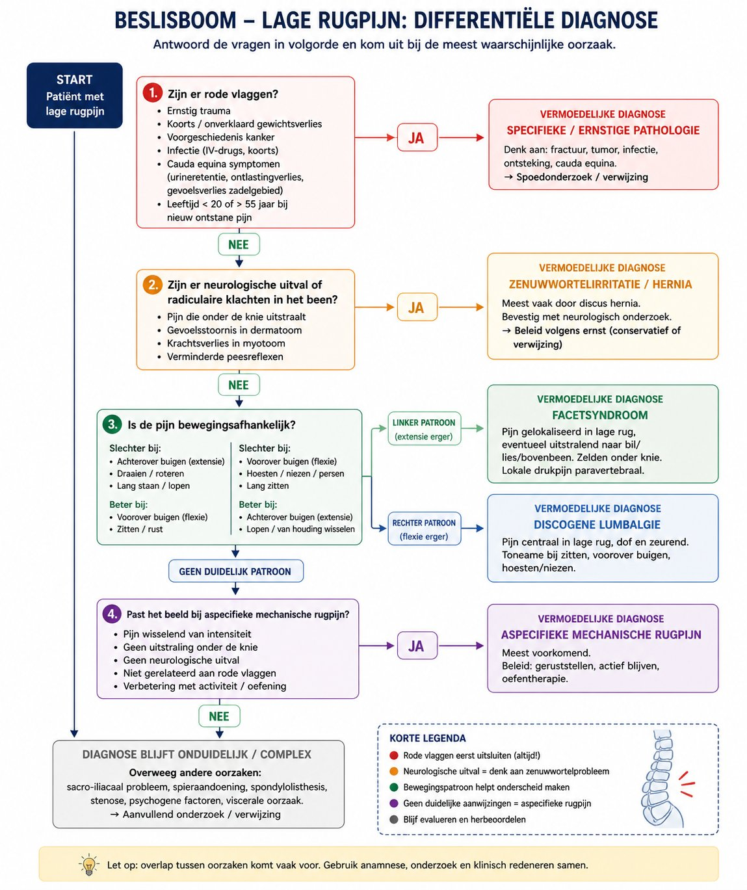
Differentiële diagnose rugpijn
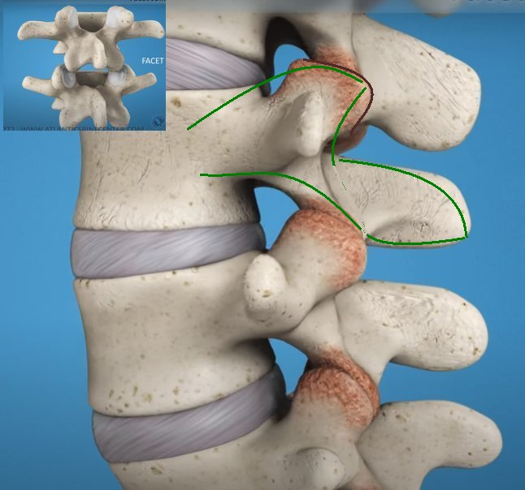
Ruggewervels, foramen en facet gewrichten
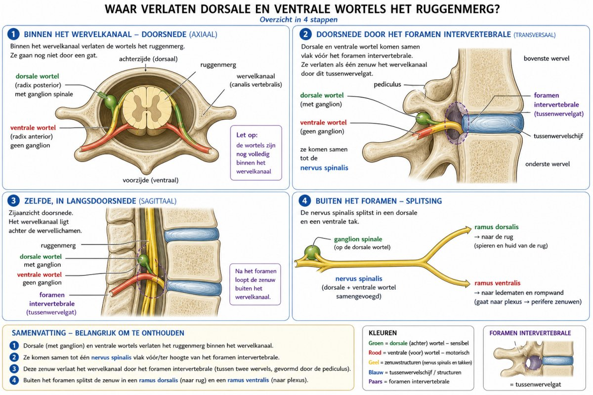
Wortels --> nervus spinalis (L1 - L2 ...) --> ramus dorsalis en ventralis
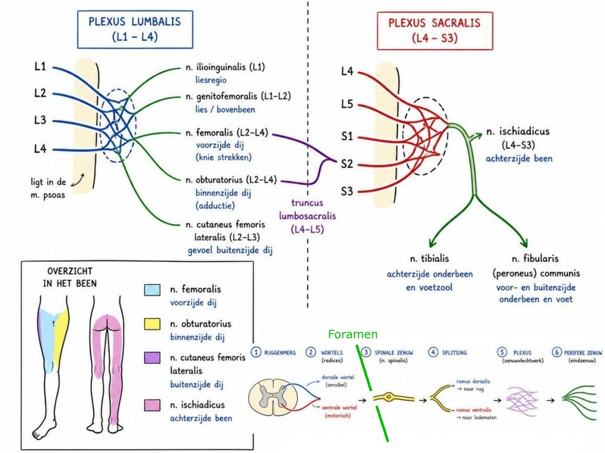
Ramus ventralis --> plexus L & S --> nervi
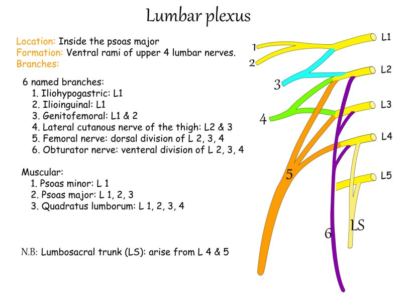
Lumbale plexus
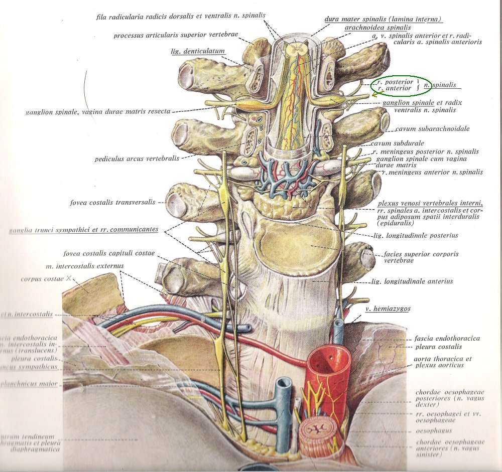
Ingewikkelde anatomische structuren
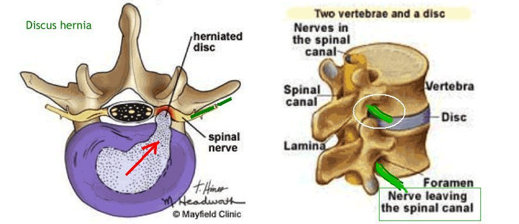
Discus hernia
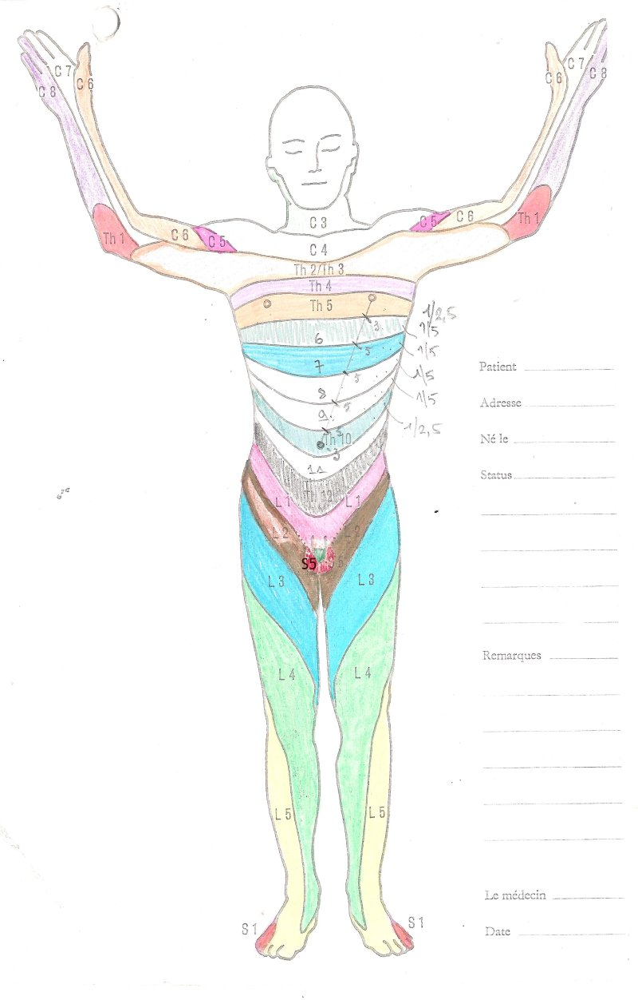
Dermatomen ventraal
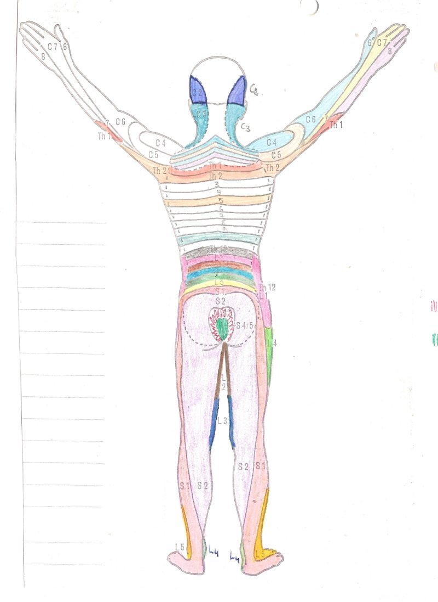
Dermatomen dorsaal
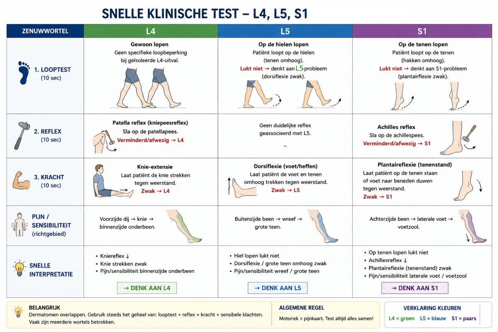
Test L4 - L5 - L6
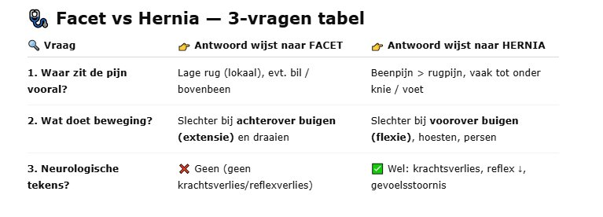
Facet syndroom
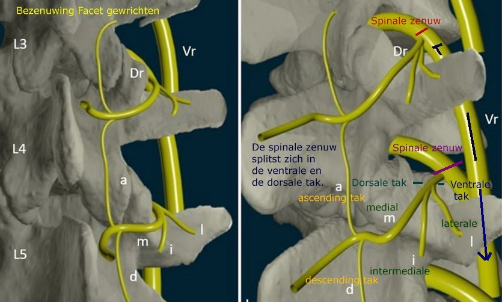
Bezenuwing Facet gewrichten
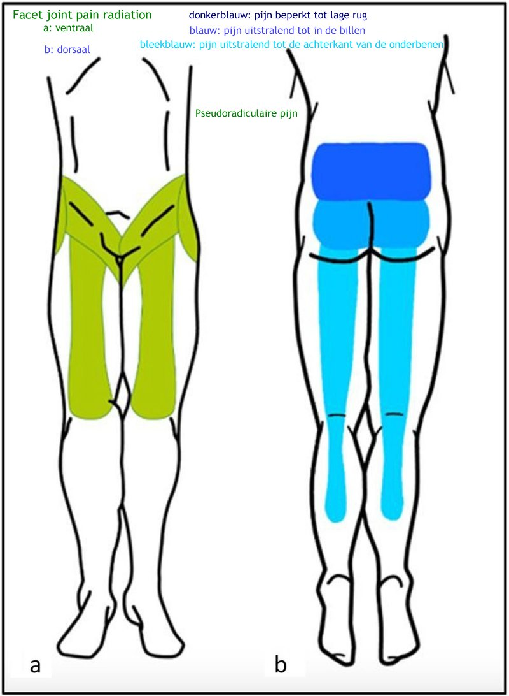
Projectie pijn facet syndroom
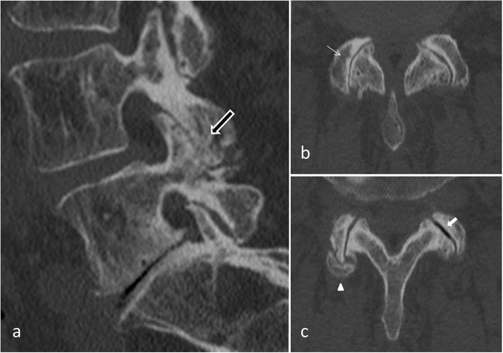
MRI Facet gewrichten